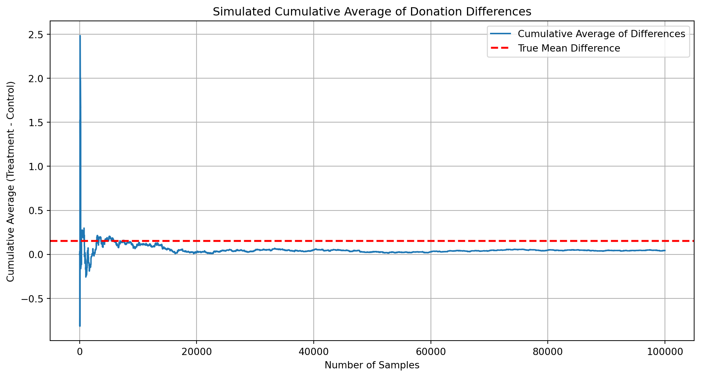

Dean Karlan at Yale and John List at the University of Chicago conducted a field experiment to test the effectiveness of different fundraising letters. They sent out 50,000 fundraising letters to potential donors, randomly assigning each letter to one of three treatments: a standard letter, a matching grant letter, or a challenge grant letter. They published the results of this experiment in the American Economic Review in 2007. The article and supporting data are available from the AEA website and from Innovations for Poverty Action as part of Harvard’s Dataverse.
To explore how different “price” signals affect charitable giving, Dean Karlan and John List conducted a large-scale natural field experiment involving over 50,000 prior donors to a U.S.-based liberal nonprofit. The experiment aimed to test whether and how matching grant offers—a common fundraising tactic—alter donor behavior.
Participants were randomly assigned to receive one of several different types of fundraising letters. The control group received a standard letter without any mention of a matching grant. The treatment group received a letter with an announcement that a “concerned fellow member” would match their donation. Within the treatment group, further randomization varied three key features:
Matching ratio: The letters promised either a $1:$1, $2:$1, or $3:$1 match.
Maximum match amount: The match was capped at either $25,000, $50,000, $100,000, or left unstated.
Suggested donation amounts: Each participant saw one of three ask amounts—equal to, 1.25×, or 1.5× their highest previous donation.
This design allowed the researchers to test both main effects and interaction effects of price (via match ratio), perceived value (via cap), and anchoring (via ask amounts).
Key Findings:
The presence of a matching grant increased both the response rate (probability of donating) and the average donation.
Merely including a match offer increased revenue per solicitation by 19% and the response rate by 22%.
Surprisingly, higher match ratios ($2:$1 or $3:$1) did not produce better results than the $1:$1 ratio.
Geographic political context mattered: Donors in “red states” (those that voted for George W. Bush in 2004) were significantly more responsive to the match offer than those in “blue states.”
No significant differences were found across different match cap amounts or suggested donation levels.
This study, published in the American Economic Review (2007), is notable for being one of the first real-world randomized trials testing economic theories of charitable giving on the “demand side”—how donor behavior responds to perceived price changes, framing effects, and social signals in a natural setting.
This project seeks to replicate their results.
Data
Description
Variable Definitions
Variable
Description
treatment
Treatment
control
Control
ratio
Match ratio
ratio2
2:1 match ratio
ratio3
3:1 match ratio
size
Match threshold
size25
$25,000 match threshold
size50
$50,000 match threshold
size100
$100,000 match threshold
sizeno
Unstated match threshold
ask
Suggested donation amount
askd1
Suggested donation was highest previous contribution
askd2
Suggested donation was 1.25 x highest previous contribution
askd3
Suggested donation was 1.50 x highest previous contribution
ask1
Highest previous contribution (for suggestion)
ask2
1.25 x highest previous contribution (for suggestion)
ask3
1.50 x highest previous contribution (for suggestion)
amount
Dollars given
gave
Gave anything
amountchange
Change in amount given
hpa
Highest previous contribution
ltmedmra
Small prior donor: last gift was less than median $35
freq
Number of prior donations
years
Number of years since initial donation
year5
At least 5 years since initial donation
mrm2
Number of months since last donation
dormant
Already donated in 2005
female
Female
couple
Couple
state50one
State tag: 1 for one observation of each of 50 states; 0 otherwise
nonlit
Nonlitigation
cases
Court cases from state in 2004-5 in which organization was involved
statecnt
Percent of sample from state
stateresponse
Proportion of sample from the state who gave
stateresponset
Proportion of treated sample from the state who gave
stateresponsec
Proportion of control sample from the state who gave
stateresponsetminc
stateresponset - stateresponsec
perbush
State vote share for Bush
close25
State vote share for Bush between 47.5% and 52.5%
red0
Red state
blue0
Blue state
redcty
Red county
bluecty
Blue county
pwhite
Proportion white within zip code
pblack
Proportion black within zip code
page18_39
Proportion age 18-39 within zip code
ave_hh_sz
Average household size within zip code
median_hhincome
Median household income within zip code
powner
Proportion house owner within zip code
psch_atlstba
Proportion who finished college within zip code
pop_propurban
Proportion of population urban within zip code
title: “Karlan & List 2007 Data Description” format: html execute: echo: true warning: false message: false —
Load and Describe Dataset
import pandas as pd# Load the datasetdata_path ="karlan_list_2007.dta"df = pd.read_stata(data_path)# Identify variable typesnumerical_vars = df.select_dtypes(include=['number']).columns.tolist()categorical_vars = df.select_dtypes(include=['category']).columns.tolist()# Summary statistics for numerical variablessummary_stats = df.describe()# Display variable types and summaryprint("Numerical Variables:")for var in numerical_vars:print(f" - {var}")print("\nCategorical Variables:")for var in categorical_vars:print(f" - {var}")print("\nSummary Statistics for Numerical Variables:")print(summary_stats)
As an ad hoc test of the randomization mechanism, I provide a series of tests that compare aspects of the treatment and control groups to assess whether they are statistically significantly different from one another.
In this section, we check if the variable mrm2 (months since last donation) is balanced across treatment and control groups. We do this using:
First, I analyze whether matched donations lead to an increased response rate of making a donation.
We investigate whether being offered a matching grant (treatment) increased the likelihood of making a donation.
We’ll: - Visualize donation rates by group - Perform a Welch’s t-test and a linear regression - Run a probit regression to match results in Table 3, Column 1
import pandas as pdimport numpy as npimport matplotlib.pyplot as pltimport statsmodels.api as smimport statsmodels.formula.api as smffrom scipy.stats import t# --- Barplot: proportion who donated by treatment group ---donation_rates = df.groupby('treatment')['gave'].mean()plt.figure(figsize=(10, 6))plt.bar(['Control', 'Treatment'], donation_rates.values)plt.title('Proportion of People Who Donated by Group')plt.ylabel('Proportion Donated')plt.ylim(0, 0.03)plt.grid(axis='y')plt.show()# --- Welch's t-test manually ---treat = df[df['treatment'] ==1]['gave']control = df[df['treatment'] ==0]['gave']x1, x2 = treat.mean(), control.mean()s1, s2 = treat.std(ddof=1), control.std(ddof=1)n1, n2 =len(treat), len(control)se = np.sqrt((s1**2/ n1) + (s2**2/ n2))t_stat = (x1 - x2) / sedf_num = (s1**2/ n1 + s2**2/ n2)**2df_denom = ((s1**2/ n1)**2/ (n1 -1)) + ((s2**2/ n2)**2/ (n2 -1))df_welch = df_num / df_denomp_val_t =2* t.sf(np.abs(t_stat), df_welch)# --- Linear regression ---lm = smf.ols('gave ~ treatment', data=df).fit()# --- Probit regression ---probit = smf.probit('gave ~ treatment', data=df).fit(disp=0)# --- Output summary ---print("=== Barplot: Proportion Donated ===")print(donation_rates)print("\n=== Welch’s t-test ===")print(f"t-statistic = {t_stat:.3f}, p-value = {p_val_t:.4f}")print("\n=== Linear Regression ===")print(lm.summary())print("\n=== Probit Regression ===")print(probit.summary())
Next, I assess the effectiveness of different sizes of matched donations on the response rate.
import pandas as pdimport numpy as npimport statsmodels.formula.api as smffrom scipy.stats import ttest_ind# Keep only treated individuals for ratio comparisonsdf_treat = df[df['treatment'] ==1].copy()# Create ratio1 dummy (1 if 1:1 match ratio)df_treat['ratio1'] = (df_treat['ratio'] =="1").astype(int)# --- T-tests: comparing response rates between ratio levels ---def ttest_response(var1, var2, label1, label2): g1 = df_treat[df_treat[var1] ==1]['gave'] g2 = df_treat[df_treat[var2] ==1]['gave'] t_stat, p_val = ttest_ind(g1, g2, equal_var=False)print(f"T-test: {label1} vs {label2} | t = {t_stat:.3f}, p = {p_val:.4f}")# Run t-tests between match ratiosttest_response('ratio1', 'ratio2', '1:1', '2:1')ttest_response('ratio2', 'ratio3', '2:1', '3:1')ttest_response('ratio1', 'ratio3', '1:1', '3:1')# --- Regression: gave ~ ratio1 + ratio2 + ratio3 (1:1 is omitted baseline) ---reg1 = smf.ols("gave ~ ratio2 + ratio3", data=df_treat).fit()# --- Alternatively: use categorical variable for ratio ---reg2 = smf.ols("gave ~ C(ratio)", data=df_treat).fit()# --- Print regression summaries ---print("\nRegression with dummy variables (1:1 omitted):")print(reg1.summary())print("\nRegression with categorical ratio variable:")print(reg2.summary())# --- Response rate differences from raw data ---rate_1_1 = df_treat[df_treat['ratio'] =="1"]['gave'].mean()rate_2_1 = df_treat[df_treat['ratio'] =="2"]['gave'].mean()rate_3_1 = df_treat[df_treat['ratio'] =="3"]['gave'].mean()diff_2_1_vs_1_1 = rate_2_1 - rate_1_1diff_3_1_vs_2_1 = rate_3_1 - rate_2_1print(f"\nResponse Rate Differences from Data:")print(f"2:1 - 1:1 = {diff_2_1_vs_1_1:.4f}")print(f"3:1 - 2:1 = {diff_3_1_vs_2_1:.4f}")# --- Compare to regression coefficients ---coef_2_1 = reg1.params['ratio2']coef_3_1 = reg1.params['ratio3']diff_coef_3_1_vs_2_1 = coef_3_1 - coef_2_1print(f"\nResponse Rate Differences from Regression Coefficients:")print(f"2:1 - 1:1 = {coef_2_1:.4f}")print(f"3:1 - 2:1 = {diff_coef_3_1_vs_2_1:.4f}")
T-test: 1:1 vs 2:1 | t = nan, p = nan
T-test: 2:1 vs 3:1 | t = -0.050, p = 0.9600
T-test: 1:1 vs 3:1 | t = nan, p = nan
Regression with dummy variables (1:1 omitted):
OLS Regression Results
==============================================================================
Dep. Variable: gave R-squared: 0.000
Model: OLS Adj. R-squared: -0.000
Method: Least Squares F-statistic: 0.6454
Date: Wed, 23 Apr 2025 Prob (F-statistic): 0.524
Time: 16:11:57 Log-Likelihood: 16688.
No. Observations: 33396 AIC: -3.337e+04
Df Residuals: 33393 BIC: -3.334e+04
Df Model: 2
Covariance Type: nonrobust
==============================================================================
coef std err t P>|t| [0.025 0.975]
------------------------------------------------------------------------------
Intercept 0.0207 0.001 14.912 0.000 0.018 0.023
ratio2 0.0019 0.002 0.958 0.338 -0.002 0.006
ratio3 0.0020 0.002 1.008 0.313 -0.002 0.006
==============================================================================
Omnibus: 38963.957 Durbin-Watson: 1.995
Prob(Omnibus): 0.000 Jarque-Bera (JB): 2506478.937
Skew: 6.511 Prob(JB): 0.00
Kurtosis: 43.394 Cond. No. 3.73
==============================================================================
Notes:
[1] Standard Errors assume that the covariance matrix of the errors is correctly specified.
Regression with categorical ratio variable:
OLS Regression Results
==============================================================================
Dep. Variable: gave R-squared: 0.000
Model: OLS Adj. R-squared: -0.000
Method: Least Squares F-statistic: 0.4263
Date: Wed, 23 Apr 2025 Prob (F-statistic): 0.734
Time: 16:11:57 Log-Likelihood: 16688.
No. Observations: 33396 AIC: -3.337e+04
Df Residuals: 33392 BIC: -3.333e+04
Df Model: 3
Covariance Type: nonrobust
=================================================================================
coef std err t P>|t| [0.025 0.975]
---------------------------------------------------------------------------------
Intercept 1.23e+09 1.12e+10 0.110 0.912 -2.07e+10 2.32e+10
C(ratio)[T.1] -1.23e+09 1.12e+10 -0.110 0.912 -2.32e+10 2.07e+10
C(ratio)[T.2] -1.23e+09 1.12e+10 -0.110 0.912 -2.32e+10 2.07e+10
C(ratio)[T.3] -1.23e+09 1.12e+10 -0.110 0.912 -2.32e+10 2.07e+10
==============================================================================
Omnibus: 38963.855 Durbin-Watson: 1.995
Prob(Omnibus): 0.000 Jarque-Bera (JB): 2506451.717
Skew: 6.511 Prob(JB): 0.00
Kurtosis: 43.394 Cond. No. 3.22e+13
==============================================================================
Notes:
[1] Standard Errors assume that the covariance matrix of the errors is correctly specified.
[2] The smallest eigenvalue is 4.31e-23. This might indicate that there are
strong multicollinearity problems or that the design matrix is singular.
Response Rate Differences from Data:
2:1 - 1:1 = nan
3:1 - 2:1 = nan
Response Rate Differences from Regression Coefficients:
2:1 - 1:1 = 0.0019
3:1 - 2:1 = 0.0001
Size of Charitable Contribution
In this subsection, I analyze the effect of the size of matched donation on the size of the charitable contribution.
We explore whether being offered a matching grant affects: 1. How much people donate on average (unconditionally) 2. How much people donate among those who do give (conditionally) 3. The distribution of donations with annotated averages
import pandas as pdimport numpy as npimport statsmodels.formula.api as smfimport matplotlib.pyplot as plt# --- Unconditional regression (all people) ---model_uncond = smf.ols("amount ~ treatment", data=df).fit()print("Unconditional OLS regression (donation amount on treatment):")print(model_uncond.summary())# --- Conditional regression (only among donors) ---df_donors = df[df['gave'] ==1]model_cond = smf.ols("amount ~ treatment", data=df_donors).fit()print("\nConditional OLS regression (amount | gave == 1):")print(model_cond.summary())# --- Interpretation prompt ---print("\nInterpretation:")print("- The unconditional regression includes everyone and reflects both intensive (amount) and extensive (whether they donated) margins.")print("- The conditional regression isolates only the intensive margin — how much donors gave once they decided to give.")print("- The treatment coefficient in the conditional regression does NOT have a direct causal interpretation; it's conditional on post-treatment behavior.")# --- Histograms of donation amounts among donors, by treatment ---treat_donors = df_donors[df_donors['treatment'] ==1]['amount']control_donors = df_donors[df_donors['treatment'] ==0]['amount']plt.figure(figsize=(14, 6))# Control groupplt.subplot(1, 2, 1)plt.hist(control_donors, bins=30, alpha=0.7, color='skyblue', edgecolor='black')plt.axvline(control_donors.mean(), color='red', linestyle='dashed', linewidth=2)plt.title('Control Group: Donation Amounts (Among Donors)')plt.xlabel('Amount Donated')plt.ylabel('Frequency')plt.text(control_donors.mean(), plt.ylim()[1]*0.9, f"Mean: {control_donors.mean():.2f}", color='red')# Treatment groupplt.subplot(1, 2, 2)plt.hist(treat_donors, bins=30, alpha=0.7, color='lightgreen', edgecolor='black')plt.axvline(treat_donors.mean(), color='red', linestyle='dashed', linewidth=2)plt.title('Treatment Group: Donation Amounts (Among Donors)')plt.xlabel('Amount Donated')plt.ylabel('Frequency')plt.text(treat_donors.mean(), plt.ylim()[1]*0.9, f"Mean: {treat_donors.mean():.2f}", color='red')plt.tight_layout()plt.show()
Unconditional OLS regression (donation amount on treatment):
OLS Regression Results
==============================================================================
Dep. Variable: amount R-squared: 0.000
Model: OLS Adj. R-squared: 0.000
Method: Least Squares F-statistic: 3.461
Date: Wed, 23 Apr 2025 Prob (F-statistic): 0.0628
Time: 16:11:57 Log-Likelihood: -1.7946e+05
No. Observations: 50083 AIC: 3.589e+05
Df Residuals: 50081 BIC: 3.589e+05
Df Model: 1
Covariance Type: nonrobust
==============================================================================
coef std err t P>|t| [0.025 0.975]
------------------------------------------------------------------------------
Intercept 0.8133 0.067 12.063 0.000 0.681 0.945
treatment 0.1536 0.083 1.861 0.063 -0.008 0.315
==============================================================================
Omnibus: 96861.113 Durbin-Watson: 2.008
Prob(Omnibus): 0.000 Jarque-Bera (JB): 240735713.635
Skew: 15.297 Prob(JB): 0.00
Kurtosis: 341.269 Cond. No. 3.23
==============================================================================
Notes:
[1] Standard Errors assume that the covariance matrix of the errors is correctly specified.
Conditional OLS regression (amount | gave == 1):
OLS Regression Results
==============================================================================
Dep. Variable: amount R-squared: 0.000
Model: OLS Adj. R-squared: -0.001
Method: Least Squares F-statistic: 0.3374
Date: Wed, 23 Apr 2025 Prob (F-statistic): 0.561
Time: 16:11:57 Log-Likelihood: -5326.8
No. Observations: 1034 AIC: 1.066e+04
Df Residuals: 1032 BIC: 1.067e+04
Df Model: 1
Covariance Type: nonrobust
==============================================================================
coef std err t P>|t| [0.025 0.975]
------------------------------------------------------------------------------
Intercept 45.5403 2.423 18.792 0.000 40.785 50.296
treatment -1.6684 2.872 -0.581 0.561 -7.305 3.968
==============================================================================
Omnibus: 587.258 Durbin-Watson: 2.031
Prob(Omnibus): 0.000 Jarque-Bera (JB): 5623.279
Skew: 2.464 Prob(JB): 0.00
Kurtosis: 13.307 Cond. No. 3.49
==============================================================================
Notes:
[1] Standard Errors assume that the covariance matrix of the errors is correctly specified.
Interpretation:
- The unconditional regression includes everyone and reflects both intensive (amount) and extensive (whether they donated) margins.
- The conditional regression isolates only the intensive margin — how much donors gave once they decided to give.
- The treatment coefficient in the conditional regression does NOT have a direct causal interpretation; it's conditional on post-treatment behavior.
Simulation Experiment
As a reminder of how the t-statistic “works,” in this section I use simulation to demonstrate the Law of Large Numbers and the Central Limit Theorem.
Suppose the true distribution of respondents who do not get a charitable donation match is Bernoulli with probability p=0.018 that a donation is made.
Further suppose that the true distribution of respondents who do get a charitable donation match of any size is Bernoulli with probability p=0.022 that a donation is made.
Law of Large Numbers
To simulate the intuition behind comparing group means, we draw: - 100,000 samples from the control group donation distribution - 10,000 samples from the treatment group We compute the difference between paired samples and plot the cumulative average of the differences.
import pandas as pdimport numpy as npimport matplotlib.pyplot as plt# Use unconditional donation amount distributionscontrol_dist = df[df['treatment'] ==0]['amount']treatment_dist = df[df['treatment'] ==1]['amount']# Simulate drawsnp.random.seed(42)sim_control = np.random.choice(control_dist, size=100000, replace=True)sim_treat = np.random.choice(treatment_dist, size=10000, replace=True)# Match lengths for subtraction (repeat treatment sample)sim_treat_matched = np.tile(sim_treat, 10) # Now length = 100000# Compute vector of differencesdiffs = sim_treat_matched - sim_control# Compute cumulative averagecumulative_avg = np.cumsum(diffs) / np.arange(1, len(diffs) +1)# True difference in meanstrue_diff = treatment_dist.mean() - control_dist.mean()# Plotplt.figure(figsize=(12, 6))plt.plot(cumulative_avg, label='Cumulative Average of Differences')plt.axhline(true_diff, color='red', linestyle='--', linewidth=2, label='True Mean Difference')plt.xlabel('Number of Samples')plt.ylabel('Cumulative Average (Treatment - Control)')plt.title('Simulated Cumulative Average of Donation Differences')plt.legend()plt.grid(True)plt.show()# Display true difference for interpretationprint(f"\nTrue difference in average donation amount (treatment - control): {true_diff:.4f}")

True difference in average donation amount (treatment - control): 0.1536
Central Limit Theorem
We simulate 1000 experiments at each sample size (50, 200, 500, 1000). Each experiment: - Takes independent samples from control and treatment donation distributions - Computes the mean difference in donations We then plot histograms of these mean differences and observe whether zero falls near the center or in the tails.
import pandas as pdimport numpy as npimport matplotlib.pyplot as plt# Extract full distributionscontrol = df[df['treatment'] ==0]['amount'].valuestreatment = df[df['treatment'] ==1]['amount'].values# Sample sizes to simulatesample_sizes = [50, 200, 500, 1000]n_simulations =1000# Prepare for plotsfig, axs = plt.subplots(2, 2, figsize=(14, 10))axs = axs.flatten()# Run simulation and plotting loopnp.random.seed(123)for i, n inenumerate(sample_sizes): diff_means = []for _ inrange(n_simulations): sample_control = np.random.choice(control, n, replace=True) sample_treatment = np.random.choice(treatment, n, replace=True) diff_means.append(sample_treatment.mean() - sample_control.mean()) axs[i].hist(diff_means, bins=30, color='skyblue', edgecolor='black') axs[i].axvline(0, color='red', linestyle='--', linewidth=2, label="Zero") axs[i].set_title(f"Sample Size = {n}") axs[i].set_xlabel("Average Difference (Treatment - Control)") axs[i].set_ylabel("Frequency") axs[i].legend()plt.suptitle("Distributions of Average Differences from 1000 Simulated Experiments")plt.tight_layout(rect=[0, 0.03, 1, 0.95])plt.show()